With the 7, I played around with erasing little parts of a very easily distinguishable 7 (first img). Just removing some spots from the end of the digits keeps the prediction accuracy still pretty strong (middle img), but taking any of the digits in the main body of the image completely wrecked the image (last img). Thus, I would assume this suggests that the model is looking at the largets continuous part of the digits perhaps, which in the last images case is just pretty random and would explain why it couldn't predict well.
With the 4, I was able to I think show that the model heavily looks at the curvature of the digit, as well as the seperation of lines (wider seperation in the 4 was favored). Thus having any amount of curve in the upper left of arm of 4 made it the model register a strong 9 prediction. But a (relatively) perfectly straight 4 had the model correctly choose 4.
Multiple times through same filer: The image actually seems to be reverting back to the original image used as the style template as much as it can in confines of the image I presented.
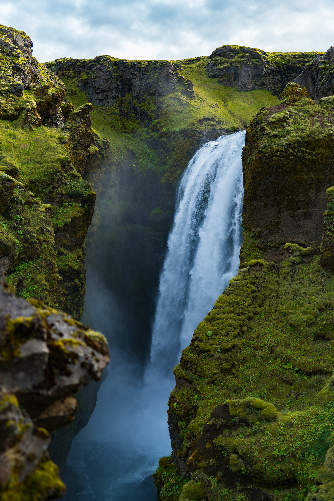 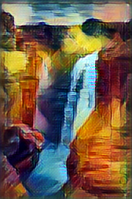 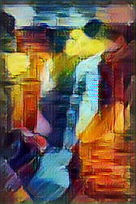 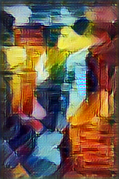 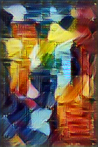 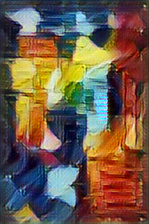New filter on filtered: The image seemed to stay a lot truer to the first style it transfered too. But adding the second style did add a bit of color distortion and bluriness.
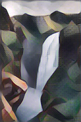 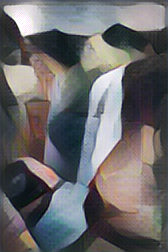Go wild: I tried to stack all the filters onto one image and end on the style option used in part 1. Surpsingly, using the same filters 5 times and using 5 different filters had really equitable end results. So maybe this suggests that a lot more of the orginal image data is being stored through image style transfers.
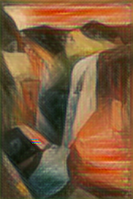 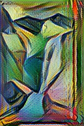 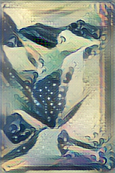 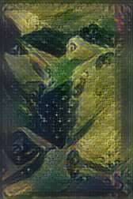 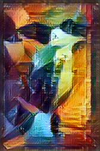Batch sizes and training rates.
Batch size: 20, number of batches: 150, learning rate: 0.20
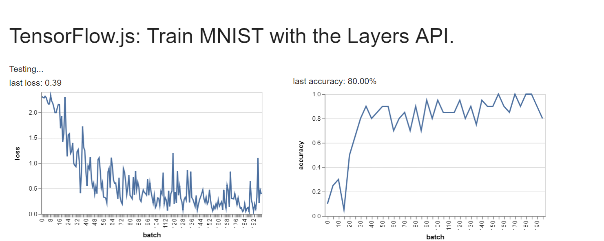 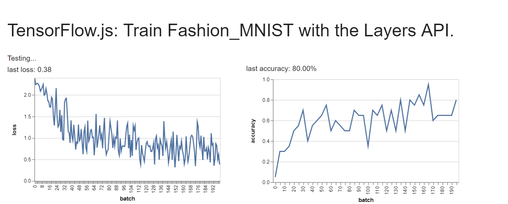 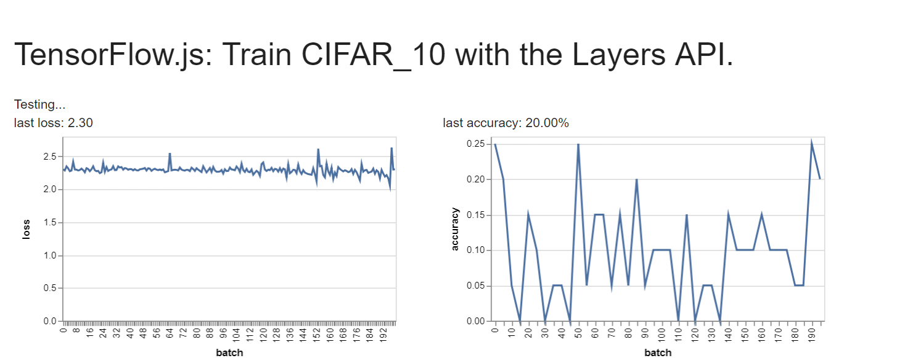Batch size: 100, number of batches: 300, learning rate: 0.15
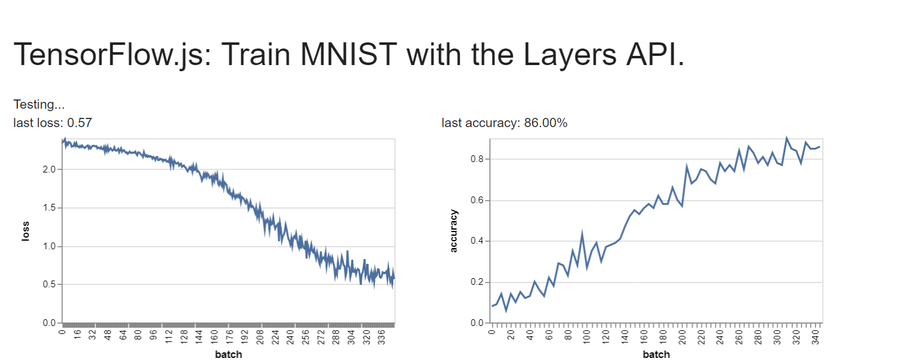 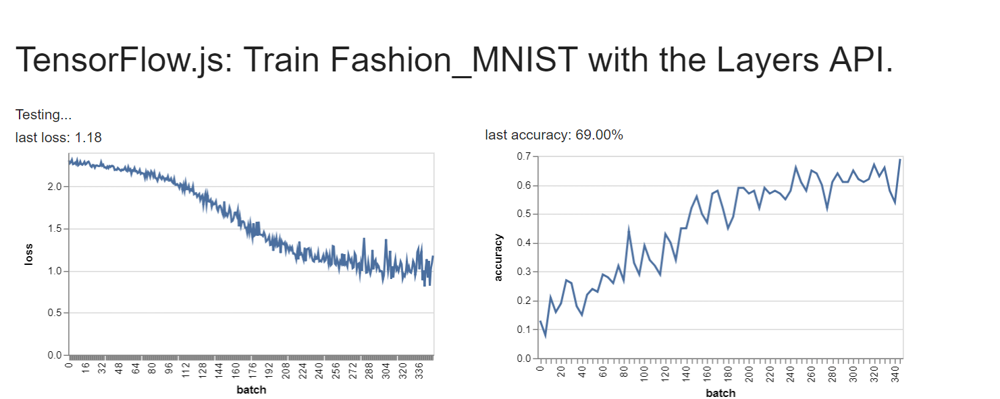 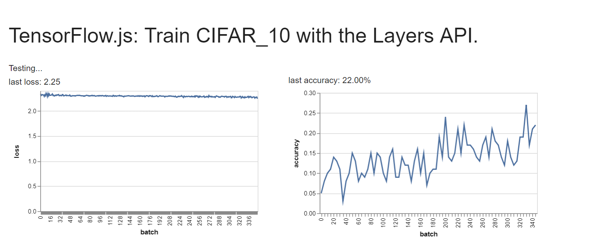Batch size: 300, number of batches: 500, learning rate: 0.10
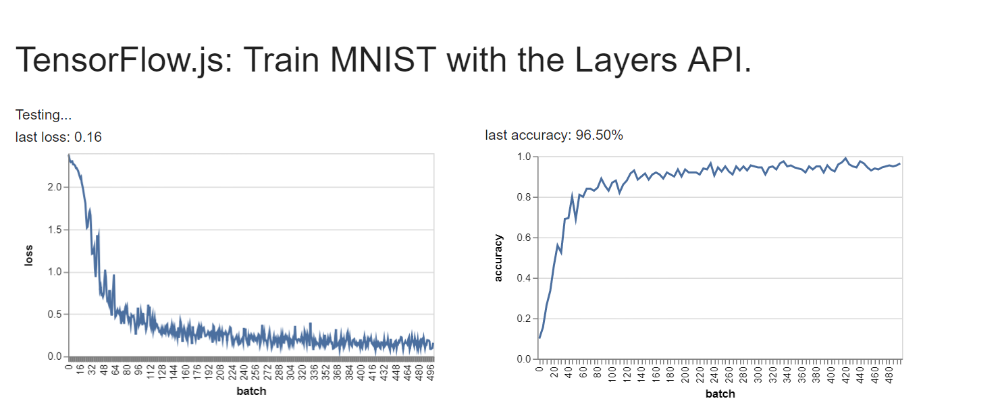 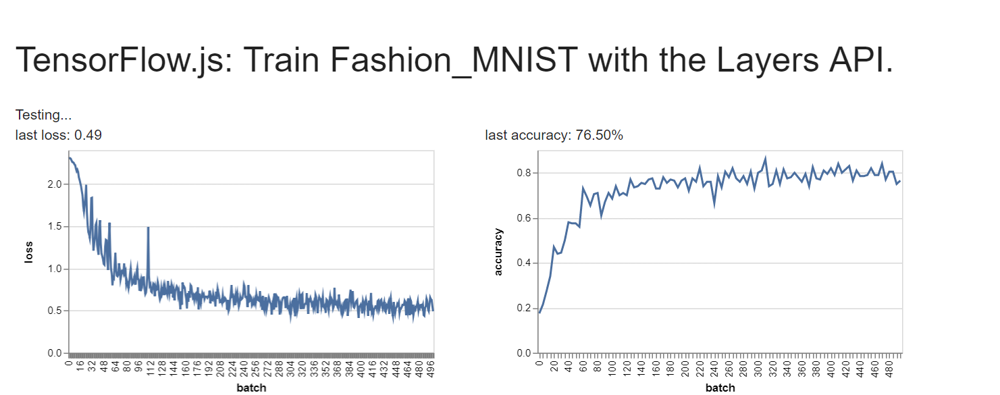 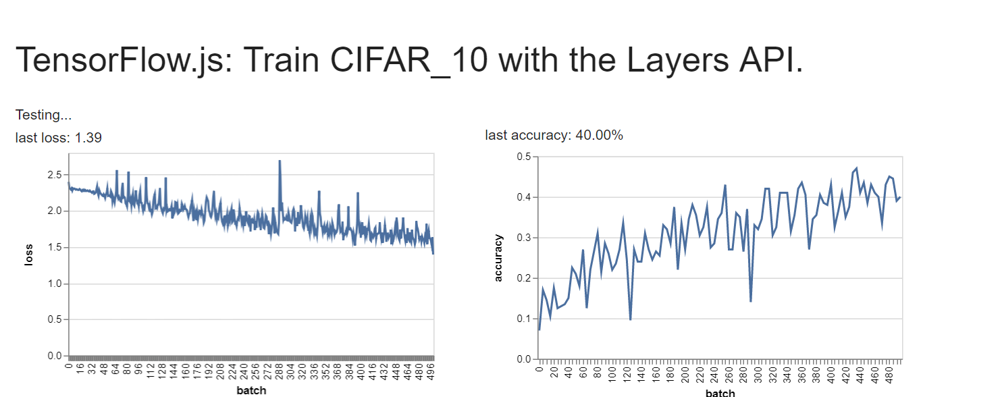Convultional attribute edits
Convulational Layer 1 Edits: Increase Kernel Size to 5, Increase strides to 2, Decrease Max Pool Stride to [1,1]
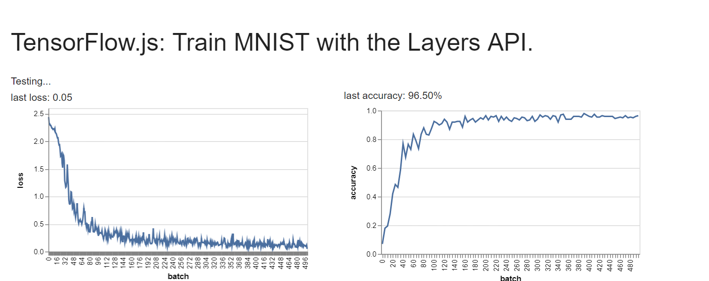 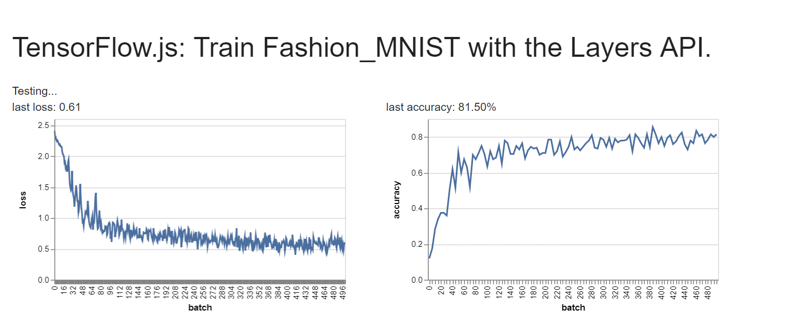Convulational Layer 2 Edits: Increase Kernel Size to 5, Increase strides to 2, Decrease Max Pool Stride to [1,1]
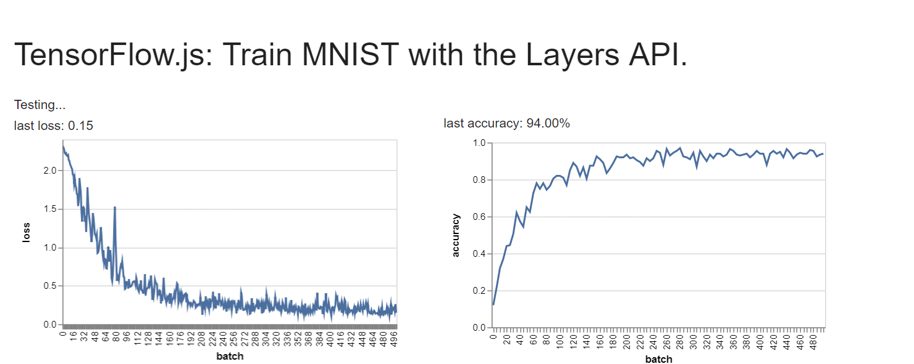 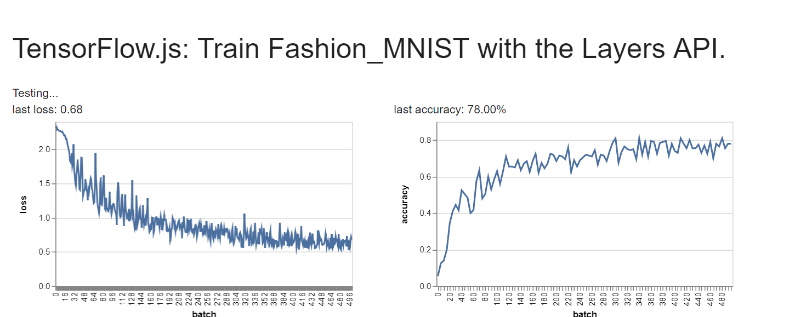CIFAR is much harder to train for 2 main reasons I think. First, it is head and shoulders more complex images then fashion-mnist and mnist, and thus will need more training time. Plus, CIFAR_10 is in color, thus really has 3 layers per image to train, while the mnist's are in black and white and thus only have 1 layer to train per image
Adding Convulational layers: Up to 3 layers increases accuracy (but slows things down with each new layer). But once you get to 5 layers, nothing is able to learn and accuracy stays terrible throughout training.
2 layers, 3 layers, 5 layers
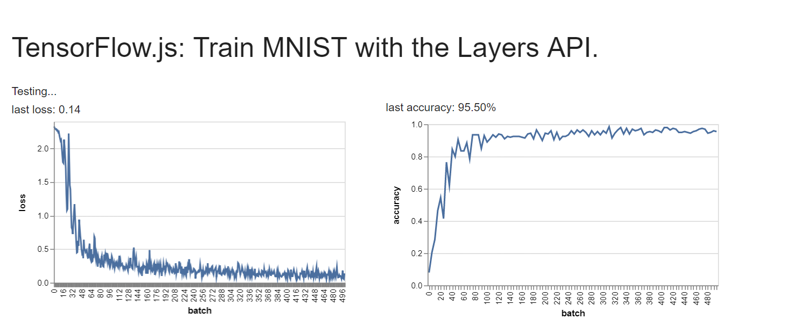 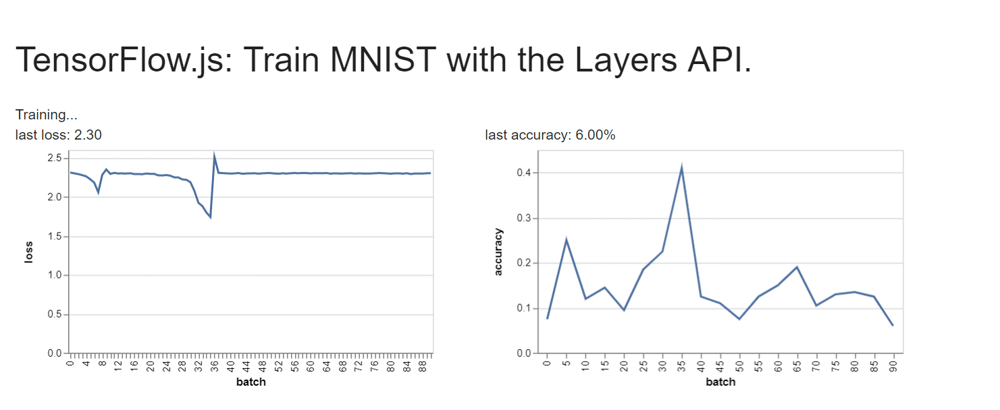Trying to get CIFAR_10 above 60%: I guess techinically I was, but using 2 convolutional layers with max pools, and two connected Layers with a 0.10 trianing rate eventually got me too a point where the test accuracy would fluctuate between 45 and 65/70 percent at around the eight minute mark, but I did manage to screenshot a flucuation over 60%, so that's a positive haha. Example I had seen online where doing over 100,000 batches though, but my computer is just to slow to that many in a short amount of time, especially in javascript!
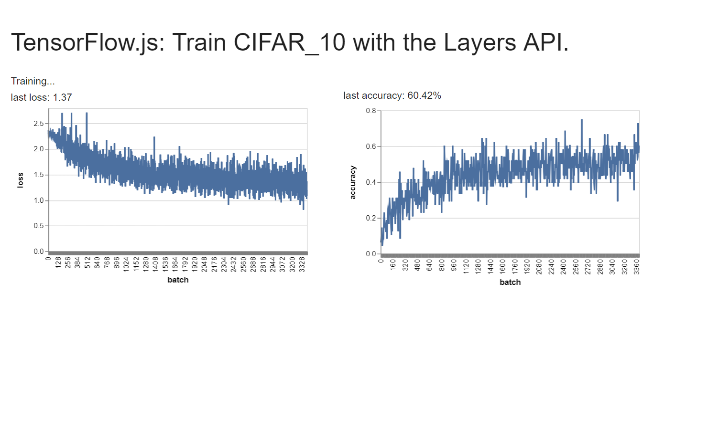Performance Stats for 3 Model Setups
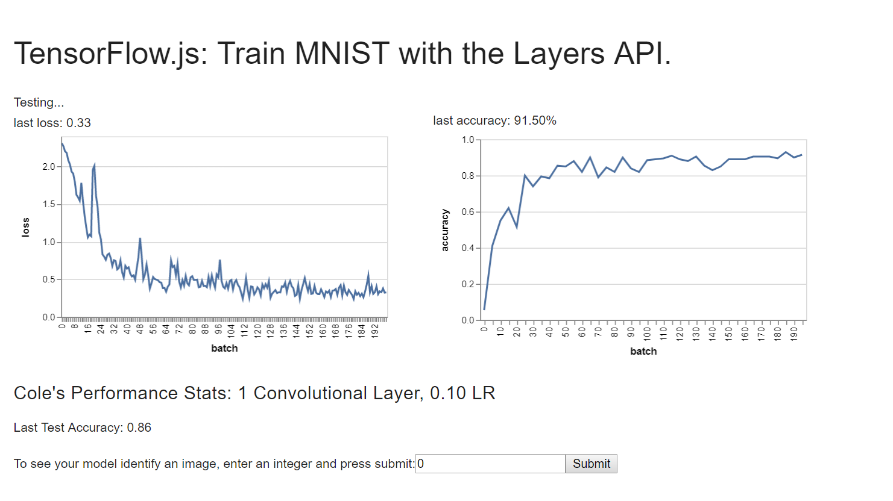 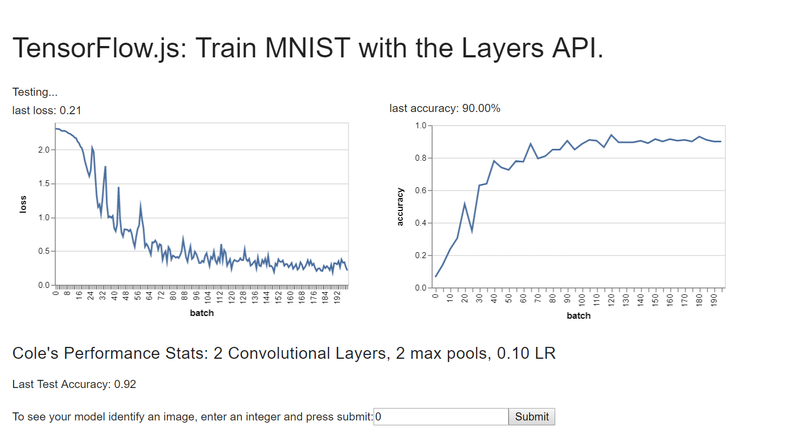 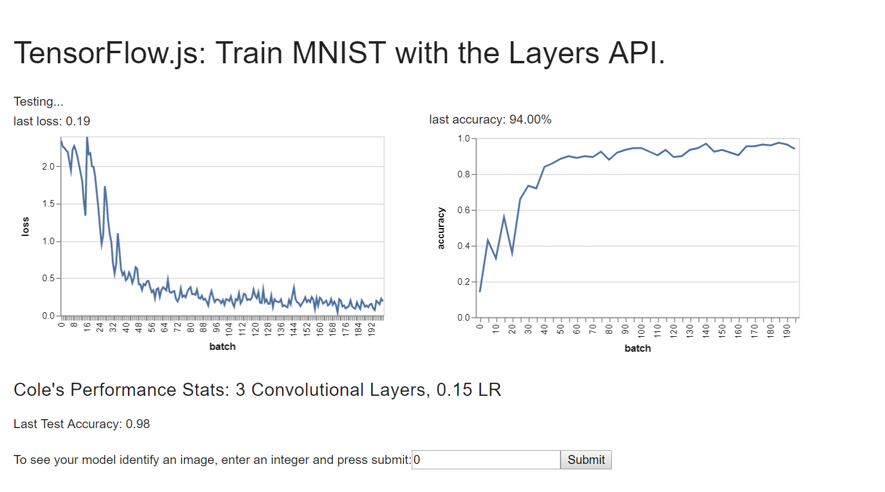Code Links as Text Files (3 files editted for performance stats)
index.html file